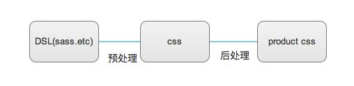
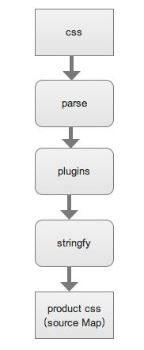

# 样式模块化
# 前言
本人平时学习及收集内容，欢迎参入一起讨论。
# 内容
# 一、预处理与后处理
# 1.1 预处理
比较流行的 CSS 预处理器有Sass，Less和Stylus，CSS 预处理器的出现主要针对于 CSS 缺少编程语言的灵活性而生的，是引入了一些编程概念而生的 DSL，开发者编写简介的语义化 DSL 代码，由预处理器编译成 CSS。
以Sass为例，该预处理器支持.scss，.sass文件类型，其语法支持变量、选择器嵌套、继承（extend）、混合（mixin）和一些逻辑语句，同时还支持跨文件的导入功能，因而使得开发者能够很好的使用编程思想书写样式。
# 1.2 后处理
后处理器是对原生 CSS 进行处理并最终生成 CSS 的处理器，广义上还是个预处理器，与上面不同的是，它处理的对象是标准 CSS，比较典型的后处理工具有：
- clean-css——压缩 css
AutoPrefixer--自动添加 CSS3 属性各浏览器的前缀- Rework--取代 stylus 的插件化框架
PostCSS

PostCSS
PostCSS一开始是从AutoPrefixer项目中抽象出来的框架，它本身并不对 CSS 做具体的业务操作，只是将 CSS 解析成抽象语法树(AST)，样式的操作由之后运行的插件系统完成。

更多时候我们讨论的 PostCSS，并不只是其解析的 CSS 的核心工具，更包括它创建的插件系统，而今 PostCSS 最为吸引开发者的正是其扩展性较强的插件系统和丰富的插件支持。
常用的插件
- autoprefixer -- 自动补全 CSS 属性兼容性前缀
- postcss-cssnext -- 使用最新的 CSS 语法
- postcss-modules -- 组件内自动关联样式至选择器
- stylelint -- CSS 语法检查器
# 二、BEM
BEM 其实是一种命名的规范。或者说是一种 class 书写方式的方法论。BEM 的意思就是块(block)、元素(element)、修饰符(modifier)，是由 Yandex 团队提出的一种前端命名方法论。其核心思想就是组件化。首先一个页面可以按层级依次划分未多个组件，其次就是单独标记这些元素。BEM 通过简单的块、元素、修饰符的约束规则确保类名的唯一，同时将类选择器的语义化提升了一个新的高度。在具体 CSS 类选择器上的表现就像下面这样
.block {}
.block__element {}
.block--modifier {}
.block__element--modifier {}
2
3
4
其中，block 表示的是独立的分块或组件；element 表示每个 block 中更细粒度的元素；modifier 则通常会用来表示该 block 或者 element 不同的类型和状态。
BEM 通过简单的命名规则使得关联类名元素语义性、可读性更强，利于项目管理和多人协作；同时 BEM 方案中并没有嵌套，所有类名最浅深度，并不会出现嵌套过深难以覆盖的情况，易于维护、复用；
另一方面，BEM 强调单一职责原则和单一样式来源原则，意味着传统纯手工 CSS 可能会产生大量重复的代码，但是结合各种 CSS 预处理和 PostCSS 就可以很好的避免问题的产生。另外，虽说股则简单，但在实际使用中，维护 BEM 的命名确实需要一些成本，很多时候命名反而成了一件难事。
# 三、OOCSS
OOCSS(Object-Oriented CSS)即面向对象 CSS，主要有两个核心原则
- 分享结构和皮肤 皮肤即一些重复的初学特征，如边框、背景、颜色、分离是为了更多的利用；结构是指元素大小特征，如高度、宽度、边距等等。
.button {
padding: 10px;
box-shadow: rgba(0, 0, 0, .5) 2px 2px 5px;
}
.widget {
overflow: auto;
box-shadow: rgba(0, 0, 0, .5) 2px 2px 5px;
}
2
3
4
5
6
7
8
根据此原则，我们需要对公用的皮肤进行提取并分离，如下
.button {
padding: 10px;
}
.widget {
overflow: auto;
}
.skin {
box-shadow: rgba(0, 0, 0, .5) 2px 2px 5px;
}
2
3
4
5
6
7
8
9
- 分离容器和内容 打破容器内元素对于容器的依赖，元素样式应该独立存在。
<div class="container"><h2>xxx</h2></div>
.container h2 {...}
2
上面的h2元素依赖于父元素container，对应此原则，h2元素需要使用一个单独的选择器，如下
<div class="container"><h2 class="category">xxx</h2></div>
.category {...}
2
使用 OOSCC 范式，遵守了 DRY 的原则，能够大量减少重复的样式代码，提高代码复用；同时，视觉元素可以意灵活组合各个类名，展示不同的效果，丰富的类名也同时使得元素有着更好的可读性；另一方面，由于容器和内容的分离，CSS 完成了与 HTML 结构解耦。 但同时也会带来一些缺点，抽象复用会使 class 越来越多，极端情况会产生可能产生很多原子类，这对于那些偏向于“单一来源原则”的开发者来说并不受欢迎。
# 四、CSS modlue
CSS module不同于 vjeux 的完全放弃 CSS，它只是选择了用 js 来管理样式与元素的关联，CSS Module 通过为每个本地定义的类名动态创建一个全局唯一类名，然后注入到 UI 上，实现编写样式规则的局部模块化。
css-loader内置支持css-module，只需设置下查询参数，即可在 JS 中使用 CSS 文件的导入：
{
loader: 'css-loader',
query: {
module: true,
localInentName: '[name]__[local]--[hash:base64:5]' //
}
}
2
3
4
5
6
7
在 JS 中导入 css 文件，最终得到的其实是一个经过 CSS 文件进过parse后生成的类名映射对象{[localName]: [hashed-Name], ....}
// Header.jsx
import style from './Header.css'
...
console.log(style) // {header: 'Header__header--3kSIq_0'}
export default () => <div className={style.header}></div>
2
3
4
5
同时 CSS 文件也会被编译成对应的类名
.Header__header--3kSIq_0- {} // from Header.css .header{}
从开发体验上看，CSS-Module这种做法让开发者不必在类名的命名上小心翼翼，直接使用随机编译生成唯一标识，让类名的成为局部变量成为了可能。但同时因为也因为随机性，失去了通过此局部类名实现样式覆盖的可能性，覆盖时不得不考虑使用其他选择器（如属性选择器）。对于复用的组件而言，灵活性是必不可少的，这种局部模块化方案并不适合这种高度抽象复用的组件，而对于一次性业务组件确实能够提升开发效率。
同时 CSS module 还支持使用 composes 实现 CSS 代码的组合复用。
/* button.css */
.base{}
.normal {
composes: base
...
}
// button.jsx
import style from './button.css'
export default () => <button className={style.normal}>按按</button> // <button class="button__base--180HZ_0 button__normal--x38Eh_0">按按</button>
2
3
4
5
6
7
8
9
10
当然 CSS-module 还可以配合各种预处理器一起使用，只需在 css-loader 之前添加对于的loader，但是在编写的时候要注意CSS-module的语法要在处理器之后合法。实际使用中，对于 CSS 代码的解耦，如果引入了预处理器，代码文件的模块化就不建议使用 composes来解决。
# 五、SMACSS
SMACSS 即模块化架构的可扩展 CSS，它主要是将规则分为 5 类
- 基础（Base）
tag select的样式，定义最基础全局样式，如CSS REST。
html, body, form { margin: 0; padding: 0; }
a { color: #039; } a:hover { color: #03C; }
2
- 布局（Layout） 将页面分为各个区域的元素块
.header{}
....
.footer{}
2
3
- 模块（Module） 可复用的单元。在模块中需要注意的是选择器一律选择 class selector，避免嵌套子选择器，减少权重，方便外部覆盖。
<div class="pod pod-constrained">...</div>
<div class="pod pod-callout">...</div>
.pod { width: 100%; }
.pod .pod-callout { width: 200px; }
.pod .pod-constrained{}
2
3
4
5
- 状态（State） 状态 class 一般通过 js 动态挂载到元素上，可以根据状态覆盖元素上特定属性。
.tab { background-color: purple;... }
.is-tab-active { background-color: white; }
2
- 主题（Theme） 可选的视觉外观。一般根据需求有颜色，字体，布局等等，实现是将这些样式单独抽出来，根据外部条件（ data 属性，媒体查询等）动态设置。
SMACSS 的主要优点在于按照不同的业务逻辑，将整个 CSS 结构化分更加细致，约束好命名，最小化深度，在编写的时候，使用 SMACSS 规范能够更好的组织好 CSS 文件结构和 class 命名。
# 六、约定项目的命名空间
在 BEM 的基础上，建立命名空间主要是为了进一步帮助我们：
- 让代码能够自解释
- 在一个全局的 context 中安全地加入一个新的 class
- 确保一个修改不会产生额外的副作用
- 在后期维护时能够寻事定位问题
命名空间分为以下几种。
# 6.1 Component: c-
c-应该是一个更为常见的 namespace，表示 Components(组件)。
.c-list {}
.c-avatar {}
2
从命名中我们就能知道：这是一个 list 组件；或者这是一个 avatar 组件。
- Components 应该是是一组具体的 UI。
c-代表一个具体的组件。 - 修改它们非常安全，只会对组件产生影响。
# 6.2 Utility: u-
Untilities 符合单一职责原则，实现一个具体的功能或效果。其概念有些类似 JavaScript 中的通用工具方法。例如一个清除浮动的 Utility，或者一个文字居中的 Utility。
.u-clearfix {}
.u-textCenter {}
2
由于 Utilities 作为一组工具集，在样式上具有更强的“话语权”，所以!important在 Utilities 中会更为常见。当我们看到下面这段 HTML，我们会更加确信，这个大号的字体是.u-largeFont这个样式引起的。
<h1 class="title u-largeFont">namespace</h1>
- Utilities 中的样式一般具有更高的权重
- 不要滥用
u-前缀，只用在一些通用的工具方法上
# 6.3 Theme: t-
当我们使用 Stateful Themes 这种定义主题的方式时，往往我们会在最外层容器元素中加入一个代表不同主题的 class。这里就会用t-。
- 主题
t-是一个高层级的命名空间。 - 一定程度上它和下面的 Scope 一样，也为其内部的规则提供了一个作用空间。
- 可以很明显地标识当前 UI 的总体状态（主题）
# 参考资料
# 联系作者
平凡世界，贵在坚持。